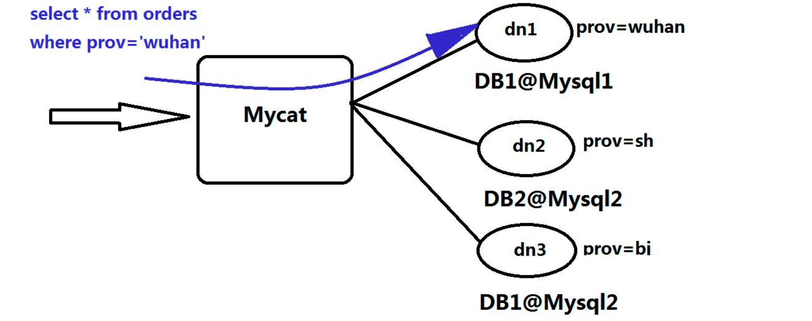

MyCat 是一个数据库代理，支持MySQL、SQL Server、Oracle、DB2、PostgreSQL等主流数据库，也支持MongoDB这种新型 NoSQL方式的存储，Mycat并不存储数据，只做数据路由。
Mycat的原理中最重要的一个动词是“拦截”，它拦截了用户发送过来的SQL语句，首先 对SQL语句做了一些特定的分析: 如分片分析、路由分析、读写分离分析、缓存分析等， 然后将此SQL发往后端的真实数据库，并将返回的结果做适当的处理，最终再返回给用户

MyCat 中的概念
-
逻辑库(schema)
存在在mycat里面的虚拟库
-
逻辑表(table)
存在在mycat里面的虚拟表
-
分片表
分片表，是指那些原有的很大数据的表，需要切分到多个数据库的表，这样，每个分片都有一部分数据，所有分片构成了完整的数据
-
非分片表
不需要进行数据切分的表
-
ER表
子表的记录与所关联的父表记录存放在同一个数据分片上，即子表依赖于父表，通过表分组(Table Group)保证数据Join不会跨库操作。
- 表分组(Table Group)是解决跨分片数据join的一种很好的思路，也是数据切分规划的重要一条规则
-
全局表
例如字典表，每一个数据分片节点上有保存了一份字典表数据 数据冗余是解决跨分片数据join的一种很好的思路，也是数据切分规划的另外一条重要规则
-
分片节点(dataNode)
数据切分后，一个大表被分到不同的分片数据库上面，每个表分片所在的数据库就是分片节点
-
节点主机(dataHost)
数据切分后，每个分片节点(dataNode)不一定都会独占一台机器，同一机器上面可以有多个分片数据 库，这样一个或多个分片节点(dataNode)所在的机器就是节点主机(dataHost),为了规避单节点主机 并发数限制，尽量将读写压力高的分片节点(dataNode)均衡的放在不同的节点主机(dataHost)
-
分片规则(rule)
前面讲了数据切分，一个大表被分成若干个分片表，就需要一定的规则，这样按照某种业 务规则把数据分到某个分片的规则就是分片规则，数据切分选择合适的分片规则非常重要， 将极大的避免后续数据处理的难度。
-
全局序列号(sequence)
数据切分后，原有的关系数据库中的主键约束在分布式条件下将无法使用，因此需要引入 外部机制保证数据唯一性标识，这种保证全局性的数据唯一标识的机制就是全局序列号 (sequence)